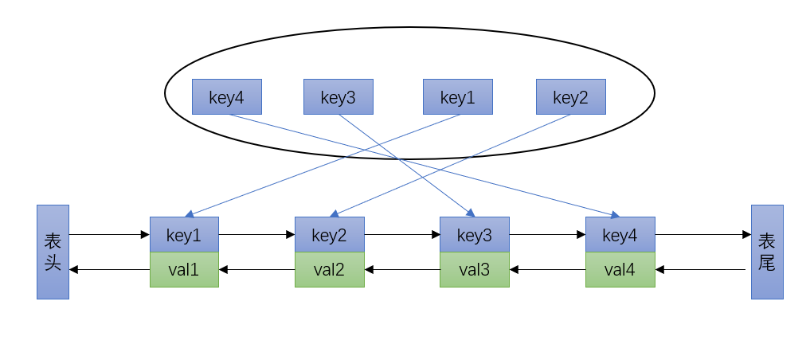
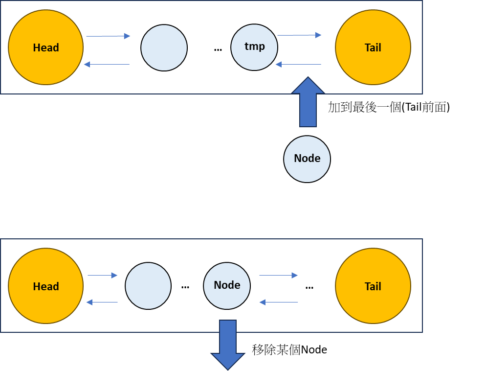
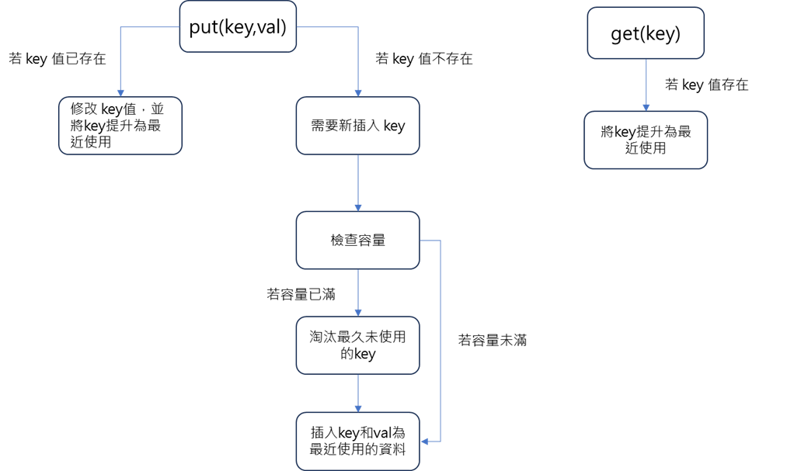

Algorithm - LRU 快取
LRU 演算法
定義
LRU (Least Recently Used) 快取是一種快取替換算法，用於在有限的快取空間中管理和替換數據。它的基本原則是，當需要替換一個數據時，選擇最近最少使用的數據進行替換。
應用
文件系統快取
文件系統快取：操作系統使用LRU 快取來加速文件系統的訪問。當需要訪問一個文件時，如果該文件已經在快取中，則可以迅速從快取中讀取。如果快取已經滿了，則可以替換掉最久未使用的文件。
資料庫查詢結果快取
查詢結果快取：當用戶發起一個查詢時，資料庫可以將查詢結果存儲在LRU 快取中。如果同樣的查詢再次發生，則可以直接從快取中返回結果，而不需要重新執行查詢。這樣可以大大減少查詢的執行時間，提高系統的性能。
資料庫索引快取
索引快取：索引是資料庫中用於加速查詢的重要結構。資料庫可以使用LRU 快取來存儲最常用的索引頁面。當一個查詢需要使用某個索引時，DBMS可以先檢查快取中是否已經存在對應的索引頁面，如果有則可以快速從快取中讀取，否則需要從磁盤中讀取。通過使用LRU 快取，資料庫可以減少磁盤IO，提高查詢的執行效率。
雜湊鏈結串列(LinkedHashMap)
LinkedHahMap 
Node + DoubleList 
Put 和 Get 的流程圖

自己實作 LinkedHashMap
import java.util.HashMap;
import java.util.List;
import java.util.stream.Collectors;
class Node {
public int key, val;
public Node next, prev;
public Node(int k, int v) {
this.key = k;
this.val = v;
}
}
class DoubleList {
private Node head, tail;
private int size;
public DoubleList() {
head = new Node(0, 0);
tail = new Node(0, 0);
head.next = tail;
tail.prev = head;
size = 0;
}
public void addLast(Node node) {
tail.prev.next = node;
node.prev = tail.prev;
node.next = tail;
tail.prev = node;
size++;
}
public void remove(Node node) {
node.prev.next = node.next;
node.next.prev = node.prev;
size--;
}
public Node removeFirst() {
if (head.next == tail)
return null;
Node first = head.next;
remove(first);
return first;
}
public int size() {
return size;
}
}
class LRUCache {
private int cap;
private HashMap<Integer, Node> map;
private DoubleList cache;
public LRUCache(int capacity) {
this.cap = capacity;
map = new HashMap<>();
cache = new DoubleList();
}
public void put(int key, int val) {
if (map.containsKey(key)) {
deleteKey(key);
addRecently(key, val);
return;
}
if (cache.size() == cap) {
removeLeastRecently();
}
addRecently(key, val);
}
public int get(int key) {
if (!map.containsKey(key)) {
return -1;
}
makeRecently(key);
return map.get(key).val;
}
public List<Integer> getAll() {
return map.values().stream().map(node-> Integer.valueOf(node.val)).collect(Collectors.toList());
}
private void makeRecently(int key) {
Node node = map.get(key);
cache.remove(node);
cache.addLast(node);
}
private void addRecently(int key, int val) {
Node node = new Node(key, val);
cache.addLast(node);
map.put(key, node);
}
private void deleteKey(int key) {
Node node = map.get(key);
cache.remove(node);
map.remove(key);
}
private void removeLeastRecently() {
Node node = cache.removeFirst();
int key = node.key;
map.remove(key);
}
}
public class Main {
public static void main(String[] args) {
LRUCache cache = new LRUCache(2);
cache.put(1, 1);
cache.put(2, 2);
System.out.println(cache.getAll());
cache.get(1);
cache.put(3, 3);
cache.get(2);
System.out.println(cache.getAll());
cache.get(1);
cache.put(4, 4);
System.out.println(cache.getAll());
}
}
---
[1, 2]
[1, 3]
[1, 4]
利用 Java 原有的 LinkedHashMap
class LRUCache {
int cap;
LinkedHashMap<Integer, Integer> cache;
LRUCache2(int capacity) {
this.cap = capacity;
this.cache = new LinkedHashMap<>();
}
public void put(int key, int val) {
if(cache.containsKey(key)) {
makeRecently(key,val);
return;
}
if(cache.size() >= cap) {
int oldKey = cache.keySet().iterator().next();
cache.remove(oldKey);
makeRecently(key,val);
} else {
makeRecently(key,val);
}
}
public int get(int key) {
if(!cache.containsKey(key))
return -1;
makeRecently(key,cache.get(key));
return cache.get(key);
}
public void makeRecently(int key,int val) {
cache.remove(key);
cache.put(key, val);
}
public List<Integer> getAll(){
return cache.values().stream().collect(Collectors.toList());
}
}
public class LRUDemo {
public static void main(String[] args) {
LRUCache cache = new LRUCache(2);
cache.put(1, 1);
cache.put(2, 2);
System.out.println(cache.getAll());
cache.get(1);
cache.put(3, 3);
cache.get(2);
System.out.println(cache.getAll());
cache.get(1);
cache.put(4, 4);
System.out.println(cache.getAll());
}
}
---
[1, 2]
[1, 3]
[1, 4]
結論
使用自定義的 DoubleList 和 Node 來實現 LRU Cache 是一種更底層的實現方式，它可以讓你更深入地理解和掌握 LRU Cache 的內部機制。這樣的實現方式在某些情況下可能會更靈活和高效，特別是當你對於如何管理鏈表和節點有特定的需求時。
然而，使用 Java 內建的 LinkedHashMap 來實現 LRU Cache 是一種更簡單和方便的方式。LinkedHashMap 提供了內建的 LRU 快取機制，並且已經經過了許多優化和測試。它的使用方式非常直觀，只需創建一個 LinkedHashMap 對象，然後使用 put 和 get 方法即可。這樣的實現方式更適合那些不需要對 LRU Cache 的內部實現細節進行定制的場景。
總結來說，使用自定義的 DoubleList 和 Node 可以讓你更深入地理解和掌握 LRU Cache 的實現細節，並且在某些情況下可能具有更好的靈活性和性能。然而，如果你只是需要一個簡單且方便的 LRU Cache 實現，使用 Java 內建的 LinkedHashMap 是一個更合適的選擇。